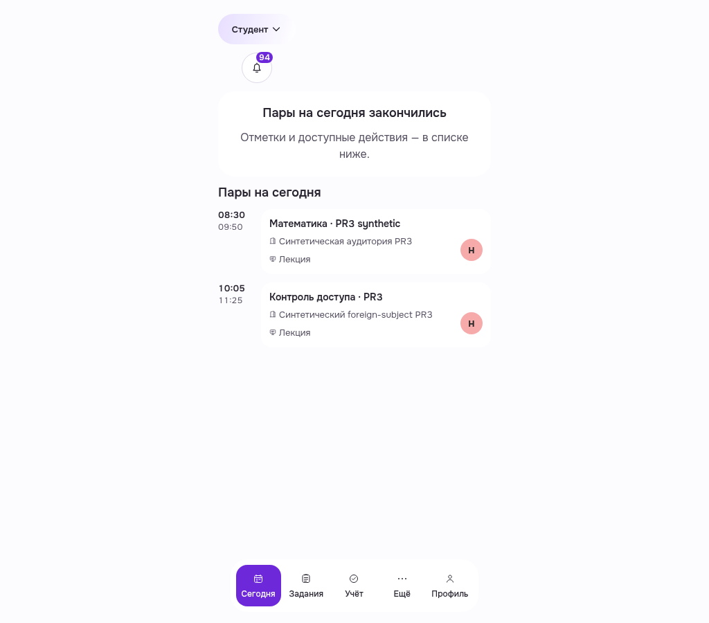
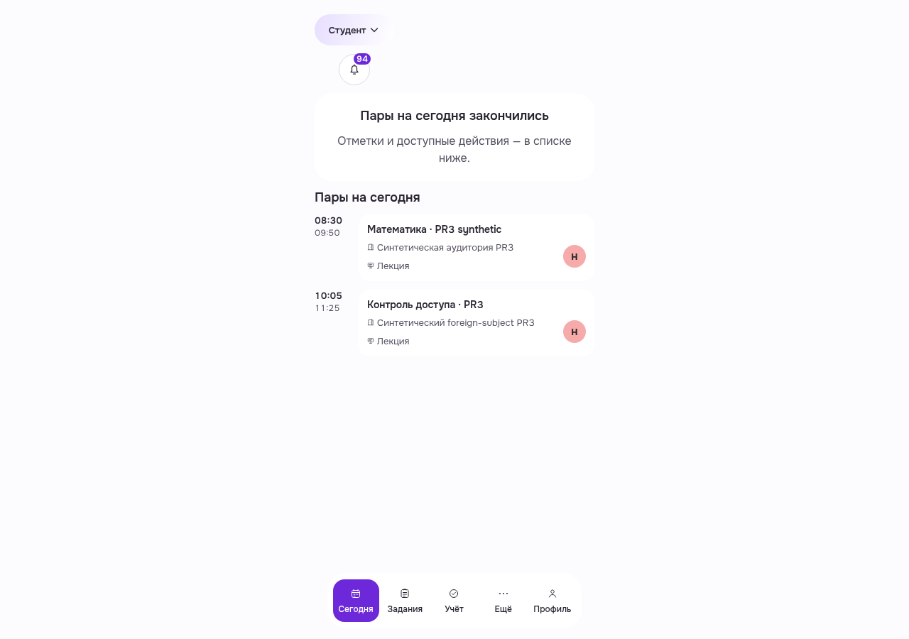
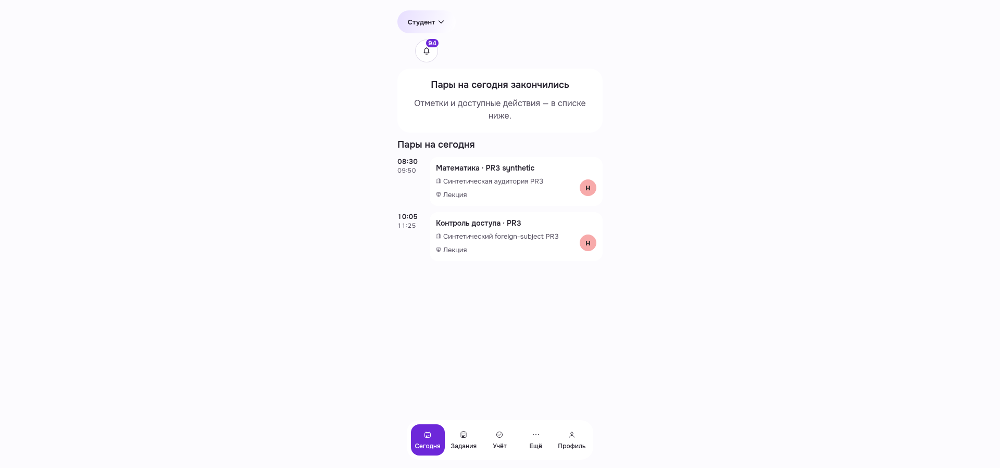
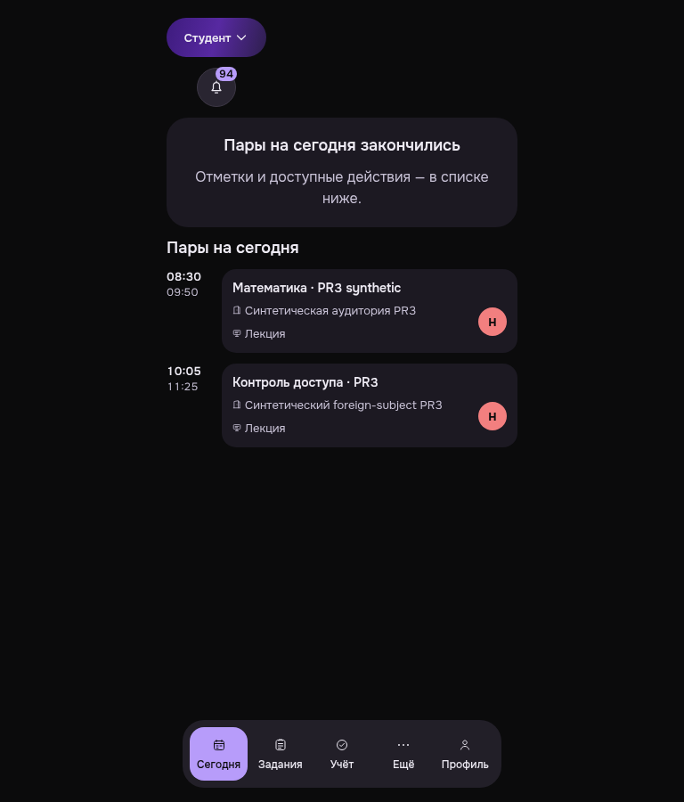
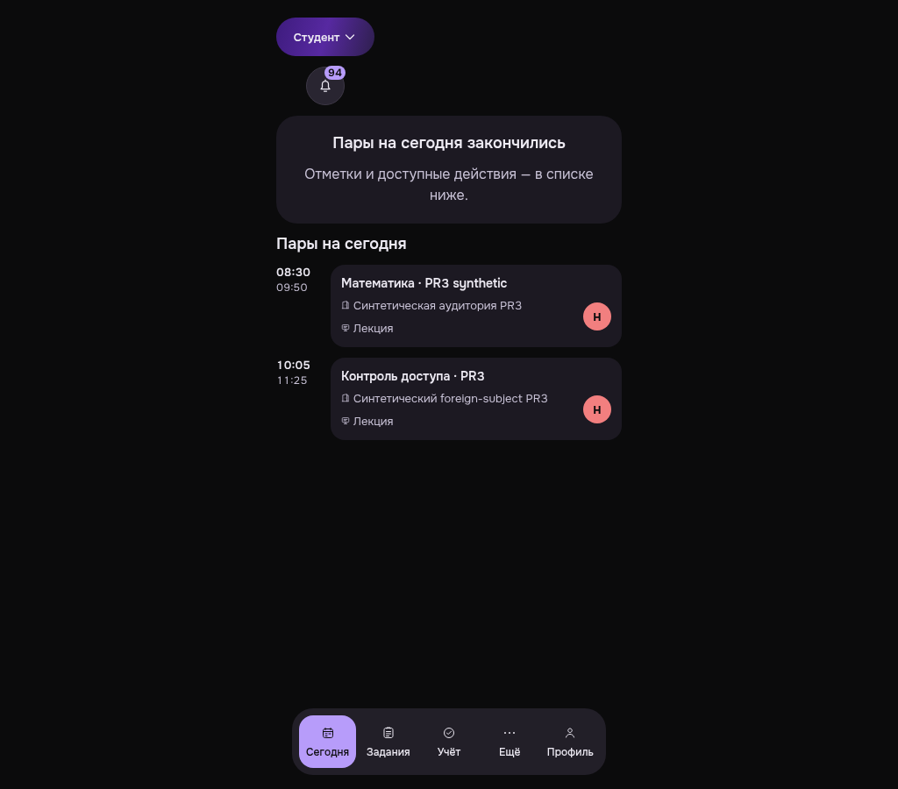
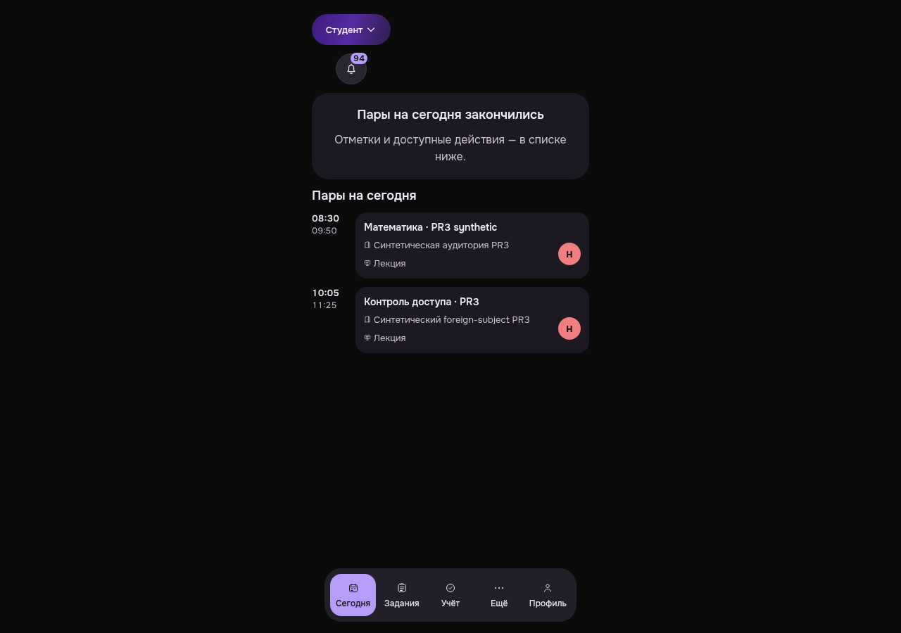
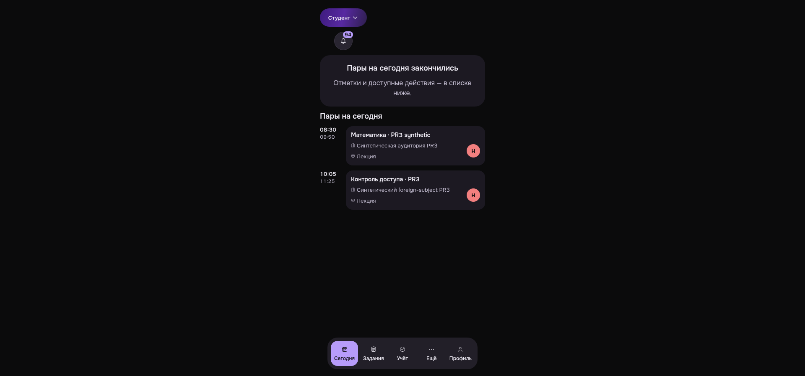

PWA-MOBILE-TODAY__actual-baseline__light__425__7ff97da6e
actual-day-ended/populated-two-lessons/no-checkin-action | root16 / viewport425×900 | OSlight
Source7ff / real Auth and API.12 original PNG viewed; raw fullpacket exit1 retained because notification locator was wrong. No domain mutations. Native ownlogout204/guest401. OS media light/dark. No active checkin state or whole-screen readiness claim.
Criteria and limits · Manifest/hash/provenance
actual-day-ended/populated-two-lessons/no-checkin-action | root16 / viewport425×900 | OSlight
actual-day-ended/populated-two-lessons/no-checkin-action | root16 / viewport600×900 | OSlight
actual-day-ended/populated-two-lessons/no-checkin-action | root16 / viewport768×900 | OSlight
actual-day-ended/populated-two-lessons/no-checkin-action | root16 / viewport1024×900 | OSlight

actual-day-ended/populated-two-lessons/no-checkin-action | root16 / viewport1280×900 | OSlight

actual-day-ended/populated-two-lessons/no-checkin-action | root16 / viewport1920×900 | OSlight

actual-day-ended/populated-two-lessons/no-checkin-action | root16 / viewport425×900 | OSdark
actual-day-ended/populated-two-lessons/no-checkin-action | root16 / viewport600×900 | OSdark
actual-day-ended/populated-two-lessons/no-checkin-action | root16 / viewport768×900 | OSdark

actual-day-ended/populated-two-lessons/no-checkin-action | root16 / viewport1024×900 | OSdark

actual-day-ended/populated-two-lessons/no-checkin-action | root16 / viewport1280×900 | OSdark

actual-day-ended/populated-two-lessons/no-checkin-action | root16 / viewport1920×900 | OSdark
